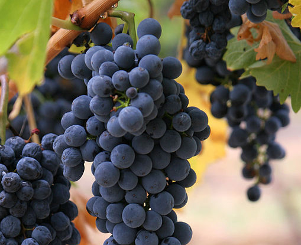

In everyday English, “berry” is a term for any small edible fruit. These “berries” are usually juicy, round, brightly coloured, sweet or sour, and do not have a stone or pit, although many seeds may be present.
“
We should all do what, in the long run, gives us joy, even if it is only picking grapes or sorting the laundry.
— E. B. White
Blueberries
Blueberries are perennial flowering plants with indigo-colored berries. Most common fruits sold as “blueberries” and are native to North America.
Vaccinium corymbosum
Nutrition information
Per 100 g
Energy 240 kJ
Carbohydrates 14.49 g
Protein 0.74 g
Grapes
Grapes can be eaten raw or they can be used for making wine, jam, juice, jelly, grape seed extract, raisins, vinegar, and grape seed oil.

Vitis vinifera
Nutrition information
Per 100 g
Energy 288 kJ
Carbohydrates 18.1 g
Protein 0.72 g
Red currant
With maturity, the tart flavour of redcurrant fruit is slightly greater than its blackcurrant relative, but with the same approximate sweetness.
Ribes rubrum
Nutrition information
Per 100 g
Energy 234 kJ
Carbohydrates 13.8 g
Protein 1.4 g
Content and images from Wikipedia.